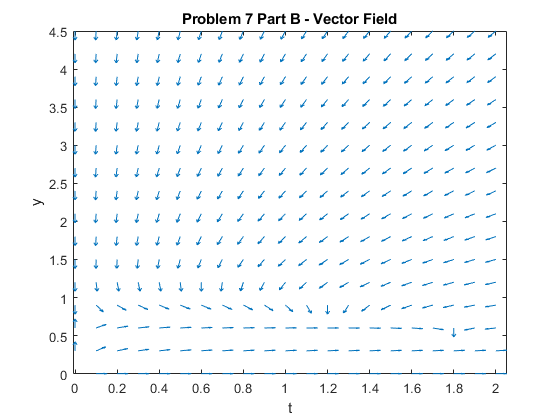
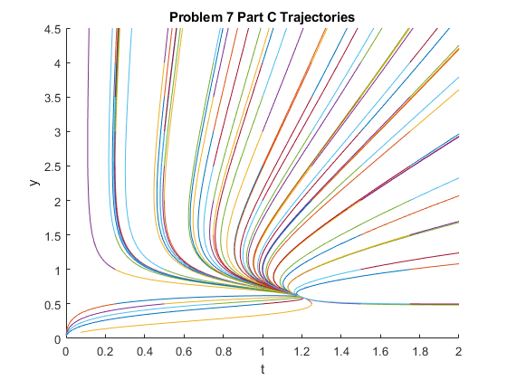
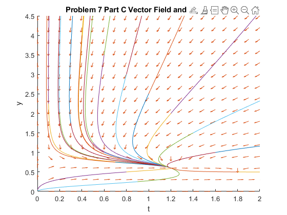
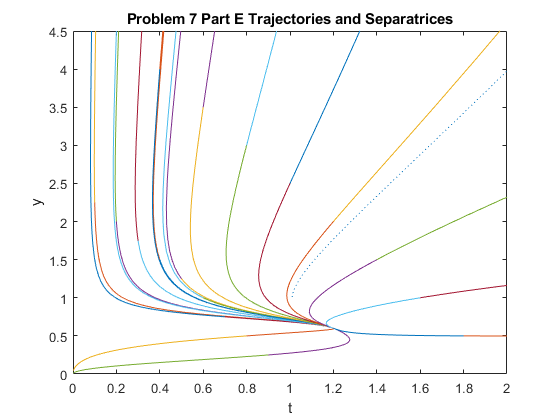

Contents
%%Yisheng Leng && Yizhan Ao
Matlab 6
Problem 3 Part A
Use eig to find the eigenvalues and eigenvectors of the following systems. Use the eigenvalues and eigenvectors to write down the general solutions. Let x(t) = (x(t), y(t)). Determine the possible limiting behavior of x(t), of y(t), and of x(t)/y(t) as t approaches positive infinity.
A = [3 -1;1 -2] [xi, R] = eig(sym(A)) % x(t) = c1*[5/2 - 21^(1/2)/2;1]*exp((1/2 - 21^(1/2)/2)t) + c2[21^(1/2)/2 + % 5/2;1]*exp((21^(1/2)/2 + 1/2)t) % The solution will approach zero if y(t) increases faster than x(t) for % x(t)/y(t) and approach positive infinity if y(t) increases at a slower % rate than x(t). These two solutions could approach either zero or % positive infinity depending on whether the exponents attached to their % eigenvectors is positive or negative.
A =
3 -1
1 -2
xi =
[5/2 - 21^(1/2)/2, 21^(1/2)/2 + 5/2]
[ 1, 1]
R =
[1/2 - 21^(1/2)/2, 0]
[ 0, 21^(1/2)/2 + 1/2]
Problem 3 Part B
Use eig to find the eigenvalues and eigenvectors of the following systems. Use the eigenvalues and eigenvectors to write down the general solutions. Let x(t) = (x(t), y(t)). Determine the possible limiting behavior of x(t), of y(t), and of x(t)/y(t) as t approaches positive infinity.
A = [3 -3;3 -2] [xi, R] = eig(sym(A)) % x(t) = c1[5/6 - (11^(1/2)*i)/6;1]*exp((1/2 - (11^(1/2)*i)/2)t) + c2[ 5/6 % + (11^(1/2)*i)/6;1]*exp(( 1/2 + (11^(1/2)*i)/2)t)
A =
3 -3
3 -2
xi =
[5/6 - (11^(1/2)*1i)/6, (11^(1/2)*1i)/6 + 5/6]
[ 1, 1]
R =
[1/2 - (11^(1/2)*1i)/2, 0]
[ 0, (11^(1/2)*1i)/2 + 1/2]
Problem 3 Part C
Use eig to find the eigenvalues and eigenvectors of the following systems. Use the eigenvalues and eigenvectors to write down the general solutions. Let x(t) = (x(t), y(t)). Determine the possible limiting behavior of x(t), of y(t), and of x(t)/y(t) as t approaches positive infinity. Find the solution with the initial condition x(0) = (7; 5; 5).
A = [-2 -1 2;0 4 5;0 -1 0] [xi, R] = eig(sym(A)) b = [7;5;5] c = xi\b % x(t) = (5/2 - (15*i)/2)*[1;i-2;1]*exp(2-i) + ((15*i)/2 + % 5/2)*[1;-i-2;1]*exp(i+2)+ 2*[1;0;0]*exp(-2)
A =
-2 -1 2
0 4 5
0 -1 0
xi =
[1, 1, 1]
[0, - 2 + 1i, - 2 - 1i]
[0, 1, 1]
R =
[-2, 0, 0]
[ 0, 2 - 1i, 0]
[ 0, 0, 2 + 1i]
b =
7
5
5
c =
2
5/2 - 15i/2
5/2 + 15i/2
Problem 3 Part D
Now solve the initial value problem in Part C with dsolve and compare the answer with the solution you obtained in Part C.
syms x y z t [x,y,z] = dsolve('Dx = -2*x-y+2*z','Dy = 4*y+5*z','Dz = -y','x(0)=7','y(0)=5','z(0)=5','t')
Warning: Support of character vectors and strings will be removed in a future release. Use sym objects to define differential equations instead. x = 2*exp(-2*t) + 5*exp(2*t)*cos(t) - 15*exp(2*t)*sin(t) y = 5*exp(2*t)*cos(t) + 35*exp(2*t)*sin(t) z = 5*exp(2*t)*cos(t) - 15*exp(2*t)*sin(t)
Problem 7 Part A
Consider the competing species model (Boyce & DiPrima, Problem 4, Section 9.4) dx/dt = x(1.5 - 0.5x - y); dy/dt = y(0.75 - 0.125y - y) For x,y > 0. Find all critical points of the system. At each critical point, calculate the corresponding linear system and find the eigenvalues of the coefficient matrix; then identify the type and stability of each critical point.
% Finding Critical Points syms x y syst1 = x*(1.5-0.5*x-y); syst2 = y*(0.75-0.125*x-y); [xc, yc] = solve(syst1, syst2, x, y); disp('Critical points:'); disp([xc yc]) % Finding Stability A = jacobian([syst1 syst2], [x y]) evals = eig(A); disp('Eigenvalues at (0,0);'); disp(double(subs(evals, {x, y}, {0, 0}))) disp('Eigenvalues at (0,3/4):'); disp(double(subs(evals, {x, y}, {0, 4}))) disp('Eigenvalues at (3/2,0);'); disp(double(subs(evals, {x, y}, {3/2, 0}))) disp('Eigenvalues at (1,1):'); disp(double(subs(evals, {x, y}, {1, 1}))) disp('Eigenvalues at (0,0);'); disp(double(subs(evals, {x, y}, {0, 0}))) disp('Eigenvalues at (0,3/4):'); disp(double(subs(evals, {x, y}, {0, 3/4}))) disp('Eigenvalues at (3/2,0);'); disp(double(subs(evals, {x, y}, {3/2, 0}))) disp('Eigenvalues at (6/5,3/5):'); disp(double(subs(evals, {x, y}, {6/5, 3/5}))) % According to the eigenvalues we calculated, our stability points are: % (0,0) - unstable node. % (0,3/4) - asymptotically stable node. % (3/2,0) - asymptotically stable node. % (6/5,3/5) - unstable saddle point.
Critical points:
[0, 0]
[3, 0]
[2, 1/2]
[0, 3/4]
A =
[3/2 - y - x, -x]
[ -y/8, 3/4 - 2*y - x/8]
Eigenvalues at (0,0);
0.7500
1.5000
Eigenvalues at (0,3/4):
-7.2500
-2.5000
Eigenvalues at (3/2,0);
0
0.5625
Eigenvalues at (1,1):
-1.5000
-0.3750
Eigenvalues at (0,0);
0.7500
1.5000
Eigenvalues at (0,3/4):
-0.7500
0.7500
Eigenvalues at (3/2,0);
0
0.5625
Eigenvalues at (6/5,3/5):
-0.7854
-0.1146
Problem 7 Part B
Plot the vector field on oa region small enough to distinguish the critical points but large enough to judge th epossible solution behaviors away from the critical points.
[X, Y] = meshgrid(0:0.1:2, 0:0.3:4.5); U = X.*(1.5-0.5*X-Y); V = Y.*(0.75-0.125*X-Y); L = sqrt((U/2).^2 + (V/4.5).^2); vectorfield = quiver(X, Y, U./L, V./L, 0.4); axis tight xlabel t, ylabel y title 'Problem 7 Part B - Vector Field'
Problem 7 Part C
Use several initial data points (x0, y0) in the first quadrant to draw a phase portrait for the system. Identify the direction of increasing t on the trajectories you obtain. Use the information from Parts A and B to choose a representative sample of initial conditions. Then combine the vector field and phase portrait on a simple graph.
f = @(t, x) [x(1)*(1.5-x(1)-.5*x(2)); x(2)*(0.75-0.125*x(1)-x(2))]; warning off figure; axes; hold on for a = .25:0.25:1.75 for b = 0.5:0.5:4 [t, xa] = ode45(f, [0 10], [a b]); plot(xa(:,1), xa(:,2)) [t, xa] = ode45(f, [0 -5], [a b]); plot(xa(:,1), xa(:,2)) end end axis([0 2 0 4.5]) xlabel t, ylabel y title 'Problem 7 Part C Trajectories' figure; axes; hold on for a = [1 2] for b = 0.1:0.1:0.9 [t, xa] = ode45(f, [0 20], [a*b a*2.5*(1-b)]); plot(xa(:,1), xa(:,2)) [t, xa] = ode45(f, [0 -5], [a*b a*2.5*(1-b)]); plot(xa(:,1), xa(:,2)) end end axis([0 2 0 4.5]) xlabel t, ylabel y phaseportrait = gca; title 'Problem 7(2) Trajectories' % Now, combine portrait and vector field: [X, Y] = meshgrid(0:0.1:2, 0:0.3:4.5); U = X.*(1.5-0.5*X-Y); V = Y.*(0.75-0.125*X-Y); L = sqrt((U/2).^2 + (V/4.5).^2); vectorfield = quiver(X, Y, U./L, V./L, 0.4); axis tight xlabel t, ylabel y title 'Problem 7 Part C Vector Field and Trajectories' hold on for a = [1 2] for b = 0.1:0.1:0.9 [t, xa] = ode45(f, [0 20], [a*b a*2.5*(1-b)]); plot(xa(:,1), xa(:,2)) [t, xa] = ode45(f, [0 -5], [a*b a*2.5*(1-b)]); plot(xa(:,1), xa(:,2)) end end axis([0 2 0 4.5]) xlabel t, ylabel y phaseportrait = gcf; hold off 
Problem 7 Part D
Suppose the initial state of the population is given by x(0) = 0.1, y(0) = 0.1. Find the state of the population t = 1, 2, 3, 4, 5, ... , 20.
[t, xa] = ode45(f, [0:20], [2.5, 2]); disp([t xa]) % The population jumpes down from t = 0 to 3. Aftet that, the population % continues decreasing to 0.6 at t = 20.
0 2.5000 2.0000
1.0000 1.2224 0.9553
2.0000 1.1312 0.7569
3.0000 1.1417 0.6811
4.0000 1.1619 0.6447
5.0000 1.1770 0.6254
6.0000 1.1866 0.6147
7.0000 1.1922 0.6085
8.0000 1.1955 0.6050
9.0000 1.1973 0.6029
10.0000 1.1984 0.6017
11.0000 1.1991 0.6010
12.0000 1.1995 0.6006
13.0000 1.1997 0.6003
14.0000 1.1998 0.6002
15.0000 1.1999 0.6001
16.0000 1.1999 0.6001
17.0000 1.2000 0.6000
18.0000 1.2000 0.6000
19.0000 1.2000 0.6000
20.0000 1.2000 0.6000
Problem 7 Part E
Explain why, practically speaking, "peaceful coexistence" is the only outcome; i.e., with the exception of the situation in which one or both species starts out without any population, the population distributions always tend toward a certain equilibrium point. Sketch on your final plot from Part C the separatrices that connect the stable equilibrium point to the two unstable points at which one population is zero; these separatrices divide the solution curves that tend toward the origin as t approaches positive infinity from those that are unbounded as t approaches negative infinity. Hint: Since the separatrices are trajectories coming out of the saddle points, one can plot them by solving the equation for initial conditions very close to the saddle points.
% There is no peaceful coexistence because the trajectories are near a % point of equilibrium. This represents a positive population of one % species and a zero population for the other. This forms separatrices and % they divide the solution curves that tend toward the origin as t % approaches infinity from those that are unbounded as t approaches % infinity. [t, xa] = ode45(f, [0, -10], [0.99 0.99]); separatrix(1) = plot(xa(:,1), xa(:,2), ':'); [t, xa] = ode45(f, [0, -10], [1.01 1.01]); separatrix(1) = plot(xa(:,1), xa(:,2), ':'); xlabel t, ylabel y title 'Problem 7 Part E Trajectories and Separatrices' hold on for a = [1 2] for b = 0.1:0.1:0.9 [t, xa] = ode45(f, [0 20], [a*b a*2.5*(1-b)]); plot(xa(:,1), xa(:,2)) [t, xa] = ode45(f, [0 -5], [a*b a*2.5*(1-b)]); plot(xa(:,1), xa(:,2)) end end axis([0 2 0 4.5]) xlabel t, ylabel y hold off
Problem 7 Part F
The vertical line x = 2.5 cuts a separatrix. By using the event detection feature of ode45 and the hint in Part E, find a numerical approximation to the number ybar such that (2.5, ybar) is on the separatrix.
hitline = @(t, x) eval('deal(x(1) - 2.5, 1, 1)', 'x(1) - 2.5'); options = odeset('Events', hitline, 'relTol', 1e-4); [t, xa] = ode45(f, [0, -10], [1.001 1.001], options); xa(length(t),:) % Thus, the separatrix cuts the vertical line x = 1.5 at y = 1.693.
ans =
2.5000 5.7116